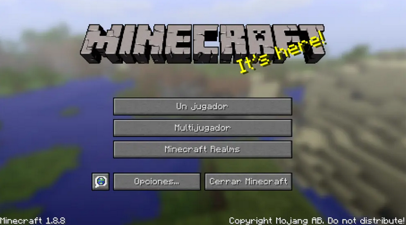
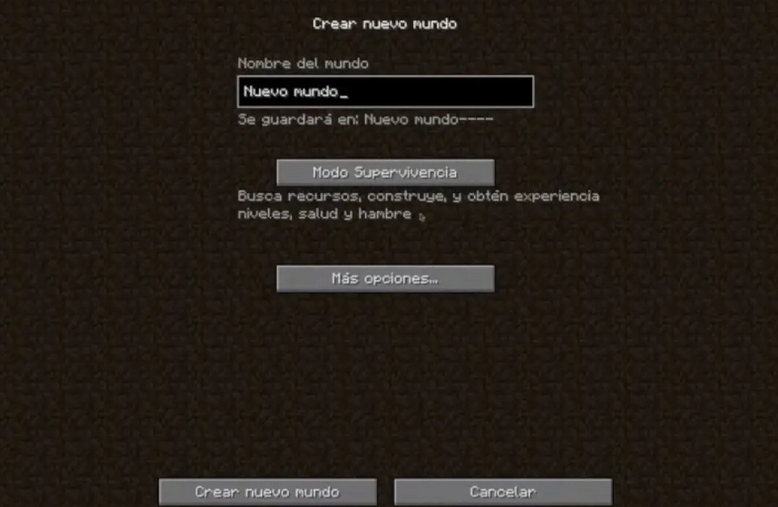

¡Manual definitivo para principiantes en Minecraft!

INTRODUCCIÓN
Minecraft es un videojuego de mundo abierto donde los jugadores pueden explorar, construir y sobrevivir
en un mundo infinito hecho de bloques. No tiene un objetivo fijo, permitiendo que cada jugador elija cómo jugar:
desde la exploración y la minería hasta la construcción de estructuras complejas o la lucha contra criaturas
Minecraft está disponible para Windows, Mac, Linux, Xbox One, Xbox Series S y X, PlayStation 4 y 5, Nintendo Switch,
Fire OS/TV, Android, iOS, Windows Mobile, y Samsung Gear VR.
COMO JUGAR
Juega tu primera partida de prueba
Al iniciar el juego, ves tres modos distintos: un jugador, multijugador y realms. La mejor opción para comenzar, es con un jugador.

Como aún no has creado ningún mundo, tendrás que elegir Crear nuevo mundo. A dicho escenario debes ponerle un nombre e iniciar la partida

Aqui te dejo unos videotutoriales cortos para aprender lo básico del juego.
como jugar en supervivencia o creativo |
como crear y usar objetos |
como prepararse para la noche |